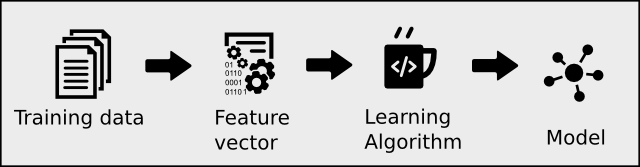
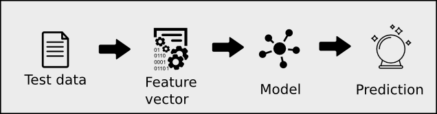
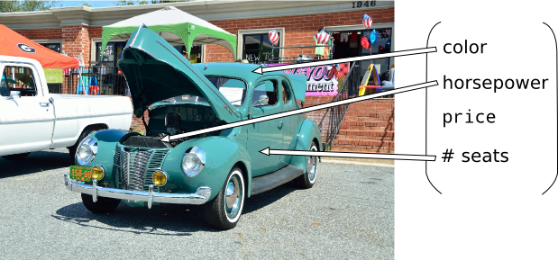
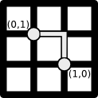
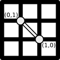
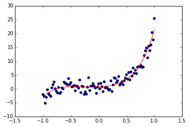
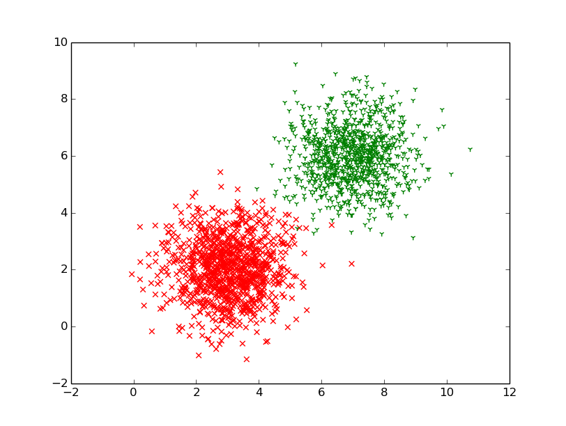
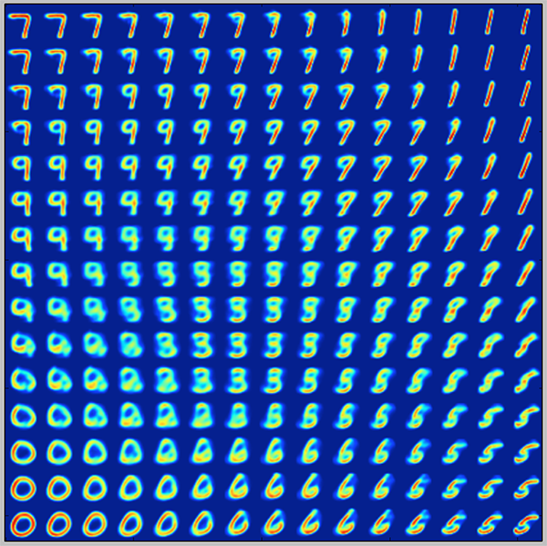
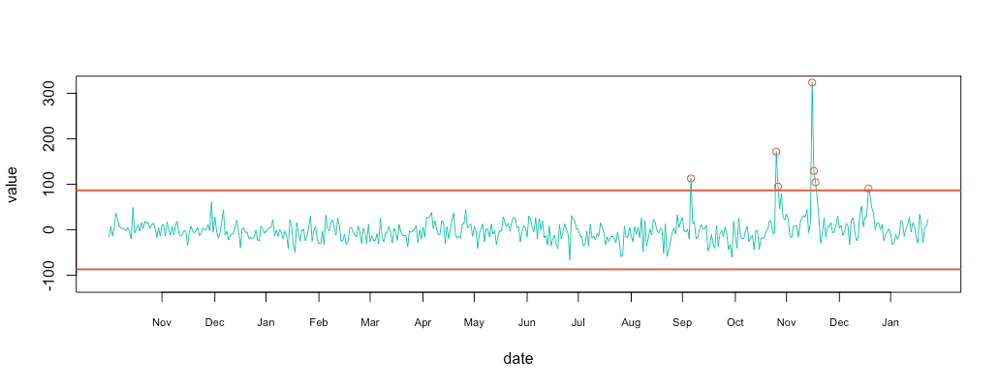

Machine Learning with TensorFlow
Lecture 2
Machine Learning
Using These Slides
↓, PgDn, n, j |
next slide |
↑, PgUp, p, k |
prev slide |
Esc |
global ctrl+f |
Learning:
Inference:
Feature vector
Exercise
You want to classify the sentiment of a tweet:
$\vec{v} \rightarrow \{\text{positive}, \text{negative}\}$
What's a good feature vector?
Real-world example that I work on
Measuring distances
L1-norm:
L2-norm:
Example
Let's say you're making a search engine.
You want to minimize number of incorrect search results.
Let $v \in \mathbb{R}^{12}$ denote error counts per month.
For example, $v_0$ is Janurary's error count.
$v_7$ is July's error count.
Users shouldn’t see 5 or more incorrect search-results per month
$||v||_{\infty}$ < 5
Less than 5 erroneous search-results are allowed for the entire year
$||v||_1 < 5$
The number of months with erroneous search-results should be less than 5
$||v||_0 < 5$
Quick overview of
- Supervised learning
- Unsupervised learning
- Reinforcement learning
1. Supervised learning
$y$ $= $ $g$$($ $x$ $; \theta)$
Input: many input and output pairs
Output: the red curve
Cost
Given a set of data $X$, the cost is denoted $J(\theta ; X)$
| input | output | prediction |
|---|---|---|
| $x_1$ | $f(x_1)$ | $g(x_1)$ |
| $x_2$ | $f(x_2)$ | $g(x_2)$ |
| $...$ | $...$ | $...$ |
| $x_n$ | $f(x_n)$ | $g(x_n)$ |
$J(\theta;X) = \sum_{x \in X}||g(x) - f(x)||$
$\theta^* = \arg \min J(\theta ; X)$
2. Unsupervised learning
Input: many input points
Output: cluster, compress, or correlate it
Cluster
Compress
Correlate
3. Reinforcement learning

Input: states, actions, and some rewards
Output: the policy function
Algorithms
Cross-validation
$X = ($ $x_1, x_2, x_3, x_4, x_5, $ $x_6, x_7, x_8$ $)$
$Y = ($ $y_1, y_2, y_3, y_4, y_5, $ $y_6, y_7, y_8$ $)$
Regularization
$J(\theta) = MSE_{\theta}(\vec{y}_{pred}, \vec{y}_{actual})$
$Loss(\theta; \lambda) = J(\theta) + $ $\lambda ||\theta|| $
$X = ($ $x_1, x_2, x_3, x_4, $ $x_5, x_6, $ $x_7, x_8$ $)$
$Y = ($ $y_1, y_2, y_3, y_4, $ $y_5, y_6, $ $y_7, y_8$ $)$
train, validation, test
Exercise
from sklearn import linear_model
clf = linear_model.Lasso(alpha=0.1)
clf.fit(xs, ys)
Use cross-validation to find the hyper-parameter $\alpha$.